Presentation
Union Pragmatique est né de la volonté de mettre commun des compétences, mais aussi de croiser différentes perspectives et aspirations. Habitué à incorporer dans son travail une réflexion sur la participation du public, ainsi qu’à organiser des temps de travail avec différents publics (établissements scolaires, sociaux, médico-sociaux) le collectif a proposé - sur une invitation de Ferenc Gróf, professeur à l’École nationale supérieure d’art de Bourges - à un groupe d’étudiant.e.s de de se joindre à lui pour s’emparer collectivement du Château d’eau - Château d’art et ainsi devenir Aqua-châtelain.e.s pour le temps d’un workshop de 10 jours.
Œuvrir a été pensé non seulement comme un temps d’exposition, mais aussi comme un temps de création et de transmission. Durant le workshop le Château d’eau est devenu un point de rencontre pour Union Pragmatique et le groupe d’étudiant.es-artistes qui l’ont employé comme atelier de production en ambitionnant de faire de ce lieu habituellement réservé à l’accueil d’expositions, un espace fonctionnel passionnant, selon les mots de Gilles Ivain.
Le travail des premiers jours du workshop a consisté essentiellement à discuter, tous ensemble ou de façon individuelle, pour partager les idées apportées par chacun et chacune et cerner les enjeux des projets imaginés et à envisager ensemble les contraintes liées au lieu et à son histoire.
Passé ce temps de concertation, le Château d’eau, a alors pris l’allure d’un grand chantier où chacun et chacune a pu contribuer selon ses capacités aux réalisations proposées par les autres.
Les propositions mises au point dans le cadre de Œuvrir, ont la particularité de compter sur le public. C’est pourquoi la période d’ouverture sera ponctuée de manifestations - rendez-vous festifs, lectures, représentations, conférences.